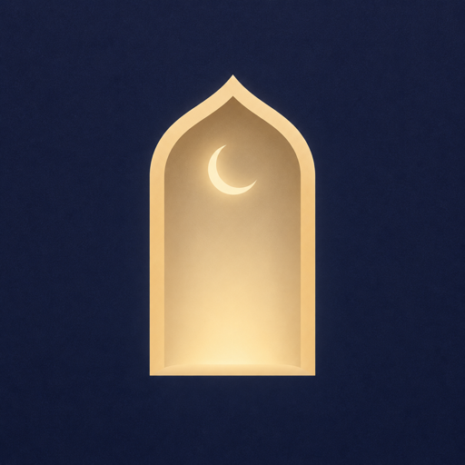
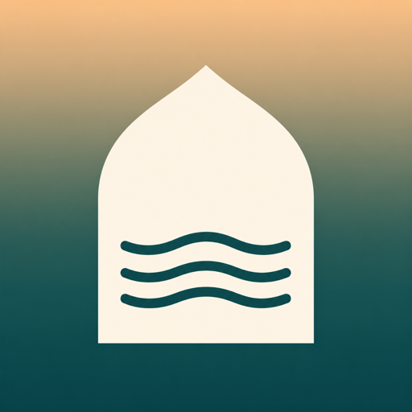

A · Михраб ночью в сборке · рекомендую
Песочная арка с тонким полумесяцем на ночном индиго. Сильнее всех передаёт «покой» и совпадает с дизайн-системой «Mihrab Heritage».
Нарисованы через Codex. Условия: без текста, каллиграфии и имён Аллаха, без зелёного полумесяца и силуэтов мечетей, как у конкурентов; должна читаться в 60 px. В сборке 1.0 (1) стоит A. Финальный выбор — после турнира иконок, как у Two Sparrows: иконки конкурентов, Jev и оценка картинок Codex.

Песочная арка с тонким полумесяцем на ночном индиго. Сильнее всех передаёт «покой» и совпадает с дизайн-системой «Mihrab Heritage».

Арка с «тихой водой» на градиенте Фаджра от тёмной бирюзы к абрикосу. Тёплая, но ближе к wellness-приложениям.
Восьмиконечная звезда с замочной скважиной на изумрудном. Прямо говорит «блокировка», но замок на религиозном символе может читаться как запрет.